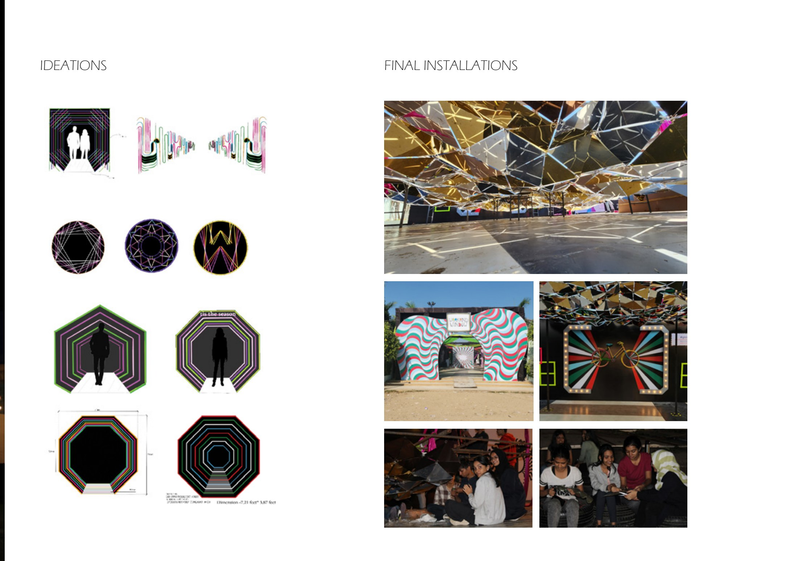
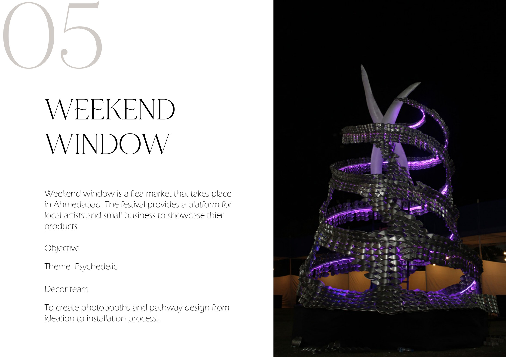
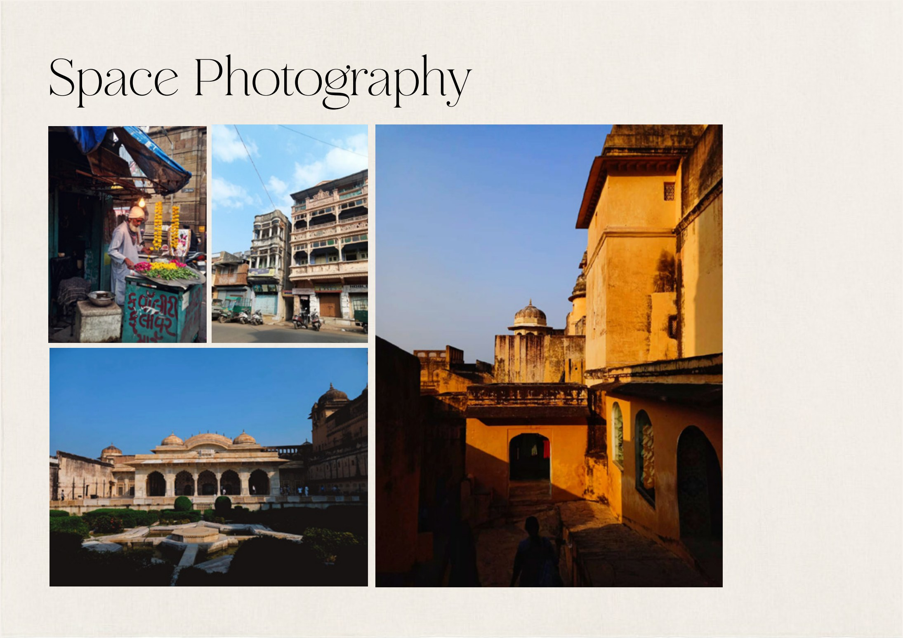
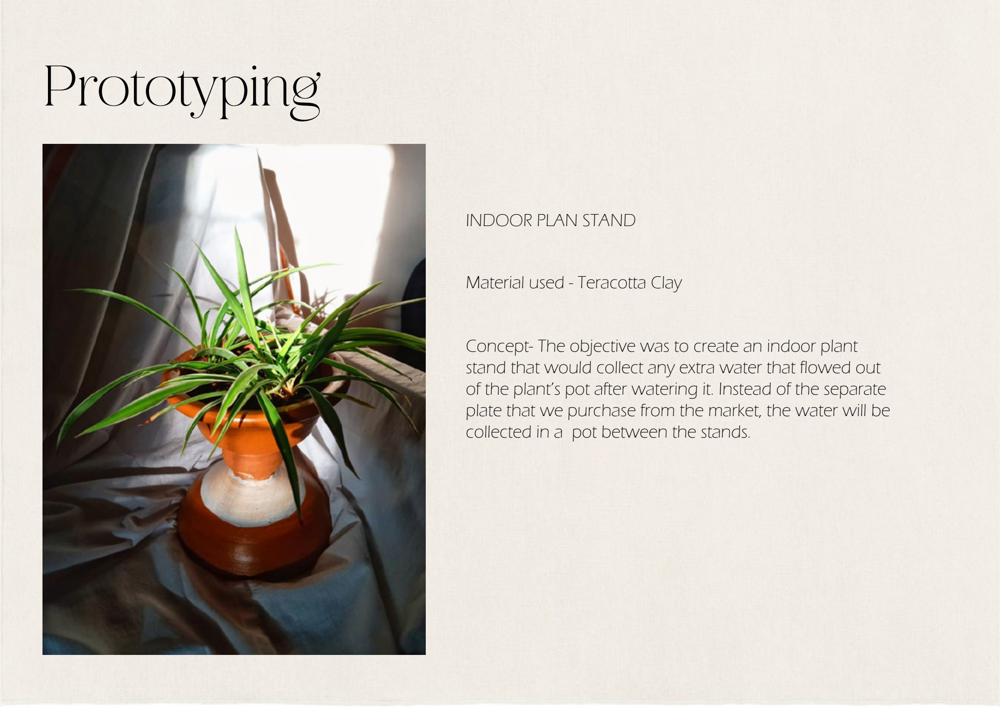

Installations · Photography · Prototyping
Miscellaneous
Weekend Window — Flea Market
Weekend Window is a flea market that takes place in Ahmedabad, providing a platform for local artists and small businesses to showcase their products.
The objective was to create photobooths and pathway designs — from ideation through to the installation process.


Space Photography
A curated gallery of interior and spatial photography — capturing composition, light, materiality and the texture of place, from street life to the architecture of Rajasthan.

Indoor Plant Stand — Terracotta
The objective was to create an indoor plant stand that collects the excess water flowing out of the plant's pot after watering. Instead of a separate market-bought plate, the water is collected in a pot integrated between the stands.
